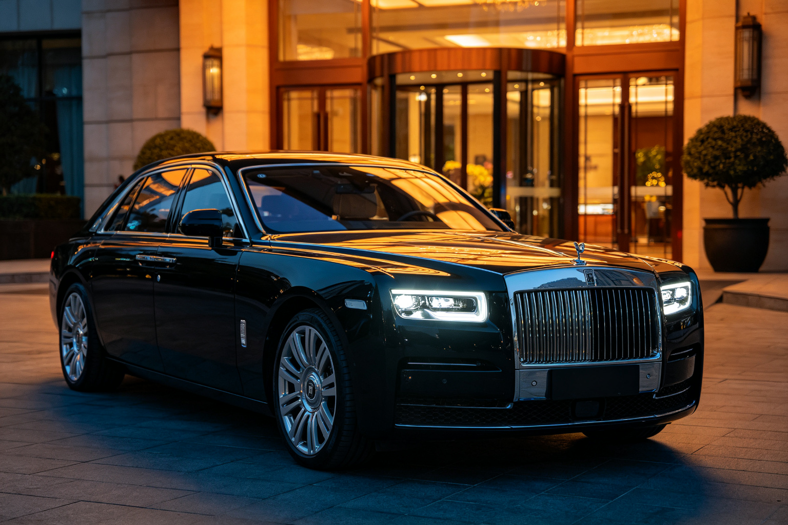

奔驰 S 级 · BEA 双极情绪美学深度分析
分析对象：奔驰 S 级（W223，2021款至今） 分析日期：2026-09-13 分析框架：BEA 双极情绪美学 v1.9.1
一、范式定位
- 当前范式：均衡典雅（偏崇高震撼）
- 亲危配比：亲 50 : 危 50
- 第一情绪：威严庄重 · 豪华舒适
- 危极综合权重 W(T)：0.500
奔驰 S 级是 BEA「均衡典雅」范式的巅峰代表。它用大尺寸直瀑格栅和立标制造崇高压迫，用圆润车身曲面和温润内饰安抚，达成「威严但不凶戾、豪华但不张扬」的顶级体验。是均衡范式的教科书。
二、维度极性评估
| 维度 | 危极强度(0-10) | 权重 | 极性方向 | 分析说明 |
|---|---|---|---|---|
| 形体曲面/动势 | 5.0 | 30% | 中性 | 圆润饱满的车身曲面提供安全感，但大尺寸和高姿态制造威严 |
| 特征线条 | 4.5 | 25% | 中性偏亲 | 流畅的腰线和曲面过渡，特征线克制不张扬，但肩线有力量感 |
| 灯组/图形 | 6.5 | 15% | 偏危 | 锐利的数字大灯、三叉星徽标、直瀑格栅，威严感强烈但不刺眼 |
| 比例姿态 | 6.0 | 15% | 偏危 | 长车头、大尺寸、高视觉重心，庄重威严，但水平腰线缓冲了压迫 |
| 材质光影 | 3.5 | 15% | 偏亲 | 光滑车漆、温润内饰材质（真皮、木纹）、柔和氛围灯，豪华但不冰冷 |
W(T) 计算： - 形体：0.30 × (5.0/10) = 0.150 - 特征线：0.25 × (4.5/10) = 0.1125 - 灯组：0.15 × (6.5/10) = 0.0975 - 比例：0.15 × (6.0/10) = 0.090 - 材质：0.15 × (3.5/10) = 0.0525 - W(T) = 0.5025 ≈ 0.50
三、BEA 四维评分
| 维度 | 得分 | 满分 | 评价 |
|---|---|---|---|
| 双极张力 | 23/25 | 25 | 对立精妙：威严vs温润、宏大vs精致、外在vs内在，均衡而有力量 |
| 结构秩序 | 25/25 | 25 | 秩序感极强：百年设计语言传承、全局统一、跨代一致性 |
| 阈值安全 | 22/25 | 25 | 极度安全：无越阈元素，认知负荷低，跨文化接受度高 |
| 语境适配 | 19/25 | 25 | 匹配商务和豪华用户，但对年轻用户偏传统，时代位置偏保守 |
| 总分 | 89/100 | 100 | 优秀作品（接近卓越） |
四、张力×秩序定位
当前位于：中高张力×高秩序 = 美感黄金区（均衡典雅核心）
奔驰 S 级的张力来自大尺寸、直瀑格栅和威严姿态；秩序来自百年设计传承、全局统一的语言和跨代一致性。高秩序把中高张力完美消化为「威严庄重」，是 BEA 黄金区均衡典雅范式的核心代表。
五、问题诊断
1. 年轻化不足（语境适配短板）
- 问题：整体设计语言偏传统稳重，对年轻用户吸引力不足，「开 S 级像司机」的刻板印象依然存在
- 违反法则：受众阈值匹配（对年轻用户张力不足、个性不足）
- 影响人群：35岁以下用户、追求个性的豪华车用户
2. 运动感偏弱（双极张力可提升）
- 问题：相比宝马7系和奥迪A8，S级的运动感偏弱，驾驶欲望不足，「坐奔驰开宝马」的刻板印象
- 违反法则：动势维度（静态暗示运动不足）
- 影响：驾驶爱好者流失，品牌形象偏「乘坐者之车」
3. 电动化转型阵痛（语境适配短板）
- 问题：EQS 电动车型的设计语言与传统 S 级割裂，「鲶鱼」造型争议较大，品牌传承面临挑战
- 违反法则：跨代一致性（电动化转型中的设计语言断裂）
- 影响：品牌认知混乱，老用户流失风险
六、改进处方
处方1：推出运动化套件（优先级：高）
- 维度：双极张力（由 T5.0 整体提升到 T5.5）
- 具体做法：在标准版（均衡典雅）之外，推出 AMG Line 运动化套件，降低车身、增加锐利特征线和运动化包围，提升动势和驾驶欲望
- 预期效果：双极张力 +1~2分，语境适配 +2~3分，覆盖年轻用户
2. 强化「驾驶者之车」叙事（优先级：中）
- 维度：语境适配
- 具体做法：在营销中强调 S 级的驾驶质感和操控性能，弱化「司机车」刻板印象，用产品力支撑「坐奔驰也开奔驰」
- 预期效果：语境适配 +2~3分，品牌形象年轻化
处方3：电动化设计语言统一（优先级：高）
- 维度：结构秩序
- 具体做法：在电动化转型中保持与传统 S 级的设计语言一致性，用「进化」而非「革命」的方式过渡，保留三叉星徽、直瀑格栅等核心识别元素
- 预期效果：结构秩序 +2~3分，品牌认知统一，老用户留存
七、总结
奔驰 S 级是 BEA「均衡典雅」范式的巅峰之作。它用大尺寸直瀑格栅和立标制造崇高压迫，用圆润车身曲面和温润内饰安抚，达成「威严但不凶戾、豪华但不张扬」的顶级体验。89分的优秀作品（接近卓越），主要短板在语境适配（年轻化不足、电动化转型阵痛）和运动感偏弱。
核心启示：均衡范式的高级感不来自「各打五十大板」，而来自「宏观定基调，微观做补偿」——S级的外观是崇高的（威严），内饰是亲和的（温润），宏观和微观形成跨层级的微差补偿。这种「外威内温」的结构，是均衡范式最经典的高级感来源。
本分析基于 BEA 双极情绪美学 v1.9.1 框架，作者：星空本空，CC BY 4.0